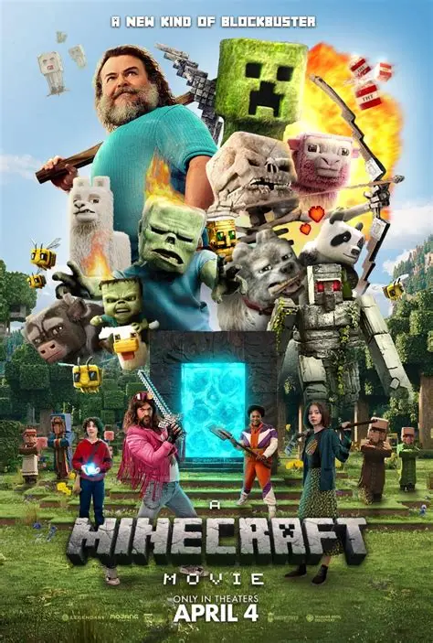

My Favourite Movies
Kimetsu no Yaiba: The Infinite Castle
"Kimetsu no Yaiba: The Infinite Castle" is a Japanese anime film released in 2025, continuing the story after the animes fourth season.
It is based on the manga Demon Slayer: Kimetsu no Yaiba by Koyoharu Gotouge.
The film is directed by Haruo Sotozaki and animated by Ufotable.
It follows Tanjiro Kamado and the Demon Slayer Corps entering the Infinity Castle.
Their goal is to defeat the main villain Muzan Kibutsuji and his powerful demons.
The movie features intense battles against the Upper Rank demons inside the castle.
It is the first part of a planned movie trilogy covering the final arc of the story.
The runtime is about 2 hours 35 minutes with high-quality animation and action.
The film was first released in Japan on July 18, 2025, with global releases later.
It became a massive box office success, earning over $700 million worldwide.
The movie broke several records and became one of the biggest anime films ever.
Fans praised its visuals, fight scenes, and emotional storytelling.
Some critics noted pacing issues due to the intense and continuous battles.
It sets up the final showdown of the Demon Slayer story in the next films.
Overall, it is considered one of the most epic and action-packed anime movies released recently.
Jujutsu Kaisen 0
"Jujutsu Kaisen 0" is a Japanese anime film released in 2021, serving as a prequel to the popular series Jujutsu Kaisen.
It is based on the manga Tokyo Metropolitan Curse Technical School by Gege Akutami.
The story follows Yuta Okkotsu, a high schooler haunted by the curse of his childhood friend.
His friend, Rika Orimoto, turns into a powerful cursed spirit after her death.
Yuta enrolls in Tokyo Jujutsu High to learn how to control this dangerous power.
He is guided by the strong sorcerer Satoru Gojo.
The film introduces the villain Suguru Geto, who seeks to create a world only for sorcerers.
The animation was produced by MAPPA, known for high-quality visuals.
It features intense action scenes, emotional storytelling, and strong character development.
The movie explores themes of love, loss, and the burden of power.
It was a major box office success both in Japan and internationally.
The film also connects directly to events and characters in the main series.
Fans appreciated its deeper look into the Jujutsu world and its darker tone.
Overall, it is considered one of the best anime films of its year.
The Minecraft Movie

"The Minecraft Movie" is a live-action adventure film released in 2025, based on the game Minecraft.
It was directed by Jared Hess and produced by Warner Bros. Pictures.
The movie stars Jason Momoa and Jack Black in major roles.
It follows four misfit characters who get pulled into a blocky Minecraft world through a portal.
In this world, they must learn crafting, survival, and teamwork to find their way back home.
They are helped by a skilled “crafter” named Steve, a key character in the story.
The film mixes live-action actors with heavy CGI to recreate the games cube-style visuals.
It includes familiar elements like mobs, mining, and building mechanics.
The movie was released worldwide on April 4, 2025.
It received mixed reviews from critics but was enjoyed by many fans.
Despite mixed reactions, it became a huge box office success.
It earned around $960 million globally, making it one of the biggest films of 2025.
The film became especially popular among younger audiences and online communities.
Due to its success, a sequel is already planned for 2027.
Overall, it brings the creativity and fun of Minecraft into a cinematic story adventure.